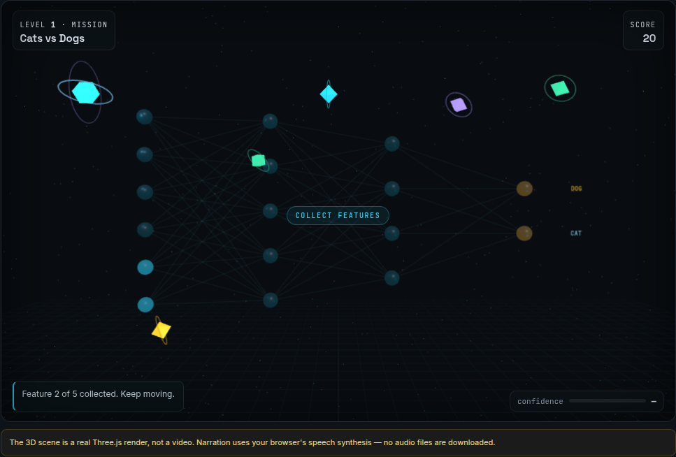
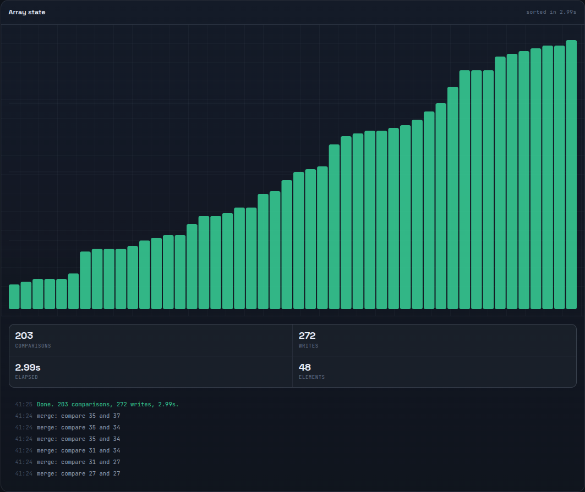
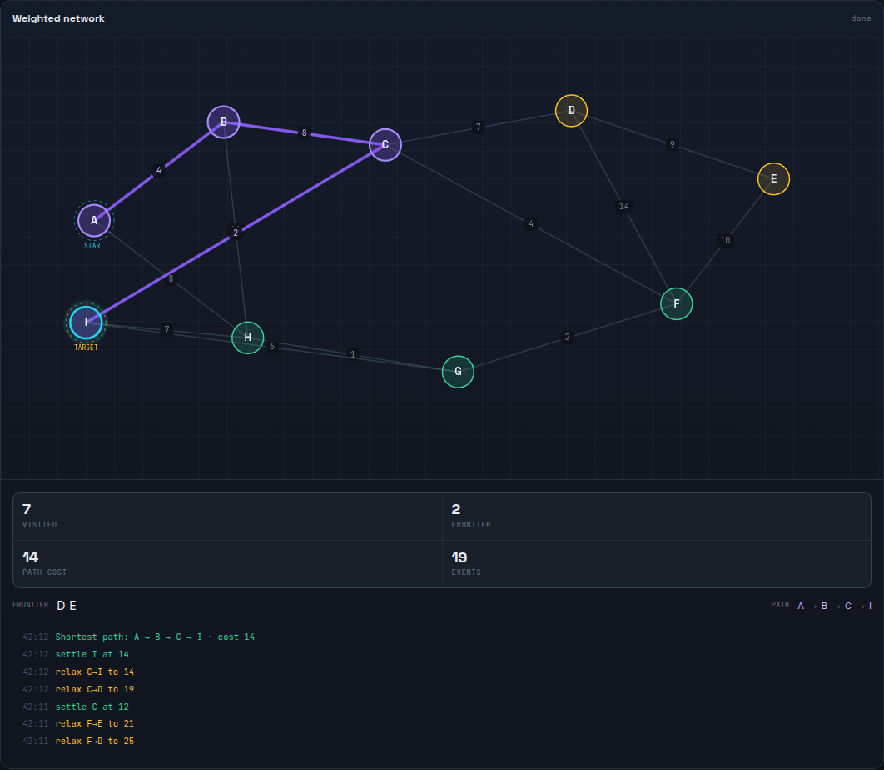
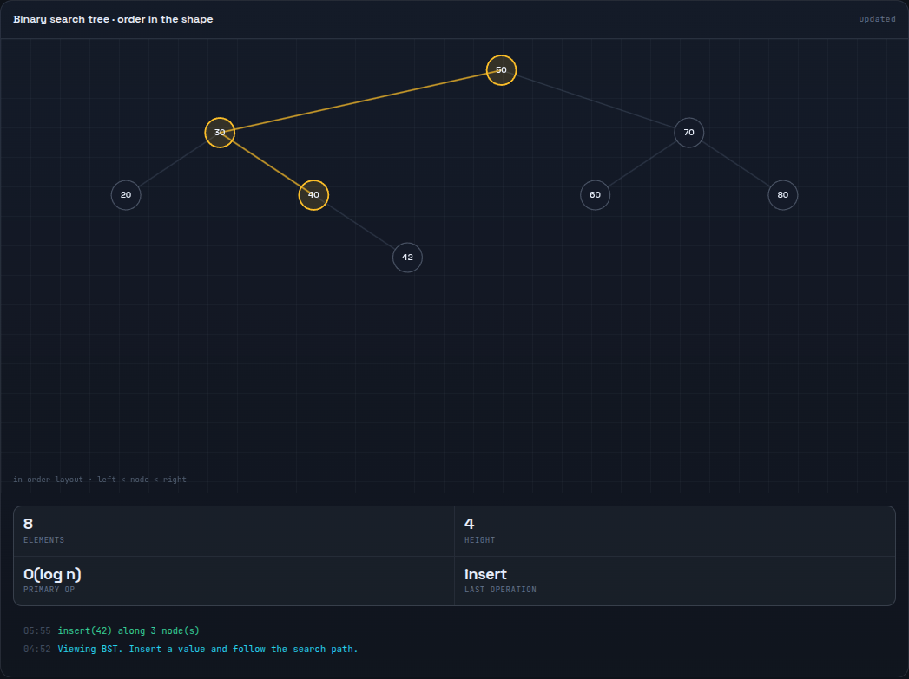
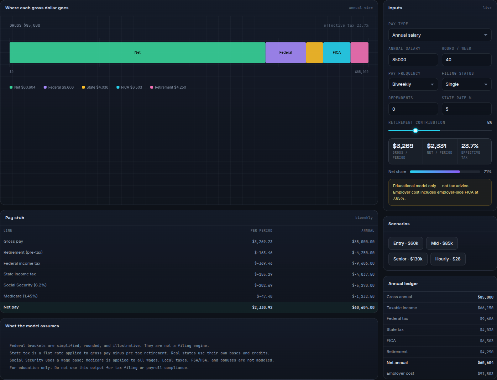
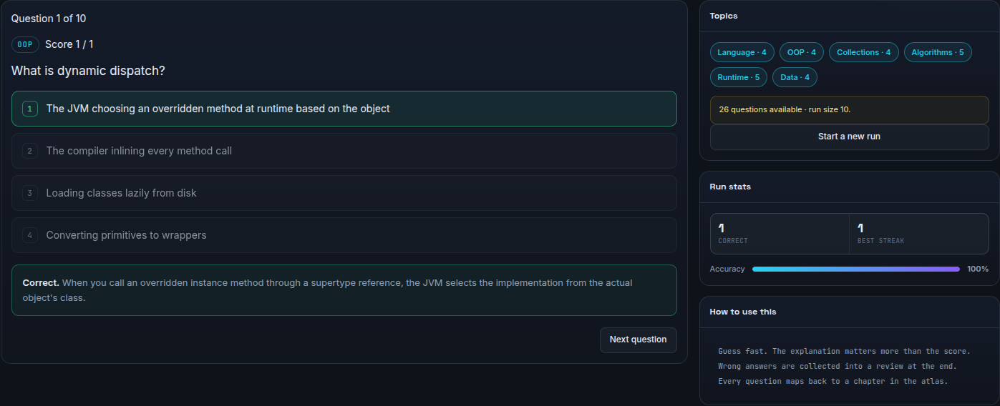

Seven ways to touch the code.
Every lab is a self-contained page built with plain HTML, CSS, and JavaScript. No accounts, no tracking, no server. Open one in a new tab, or embed it anywhere.
43 Chapter Studios
Ch 1–43One original studio per chapter: subgoal-labelled examples, predict–observe–explain, Parsons practice, a three-question mastery check, and a downloadable artifact.
Open the studios
Neural Nexus
AI · Three.jsPilot a collector through drifting feature packets. Every pickup lights an input neuron. Then fire a forward pass and hear the network explain its decision out loud.
Launch experiment
Sorting Race
Ch. 23Six classic algorithms race the same array. Compare comparisons, writes, and elapsed time at every size.
Open lab
Graph Explorer
Ch. 29Drag nodes, pick a start and target, then watch BFS, DFS, and Dijkstra explore the same map differently.
Open lab
Structures, Live
Ch. 21–27Push a stack, enqueue a job, insert into a BST, or collide two keys in a hash table. Every operation is drawn as it happens.
Open lab
Payroll Engine
Ch. 4–5Turn gross pay into net pay with progressive brackets, FICA, state tax, retirement, and dependent credits — transparently.
Open lab
Compiler Mind
All chaptersTen questions across language, OOP, collections, algorithms, runtime, and data. Every answer explains the reasoning.
Open labBuilding your own? Each lab imports the shared assets/lab.css and assets/lab.js, so a new page only needs its own canvas and logic. Add ?embed=1 to any lab URL to hide the header and footer for iframe use.